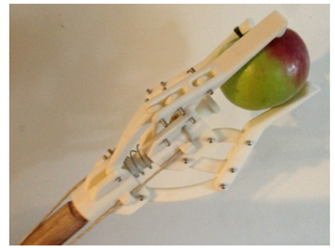
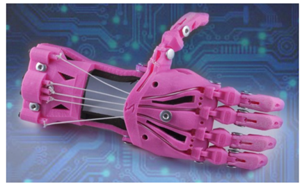
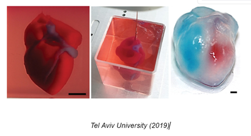
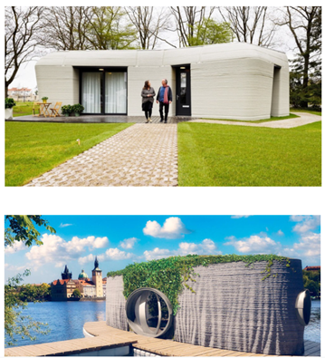
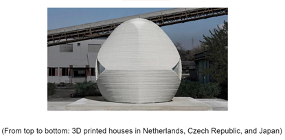
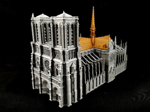

3D PRINTING IN ACTION
Besides enabling the decentralization of production, 3D printing exhibits enhanced forms of flexibility, risk reduction, and cost reduction that are observed upon implementing the technology into established frameworks of production and manufacturing. (Derossi et al., 2020). With the cost to utilize 3D printing having massively diminished in recent years, companies are able to reduce the amount of resources put not only into hardware but also into manual labor.
3D IN AGRICULTURE
In the Agricultural Industry, they use the affordable 3D printing to customize the tools they need in order to be more successful in their craft. It has been helpful in fabricating parts for outdated machineries that are challenging to produce nowadays. One of the 3D-printed tools used in agriculture is the apple picker.
They can also manufacture parts of certain machineries in an instant and without the need to avail a service of another manufacturing company. 3D printing pave the way for possibilities in their creative inventions, helping to solve their current challenges and improve their progress.
3D FOOD PRINTING
An example of such a case can be seen in 3D Food Printing which involves the creation of ingredients as opposed to actually cooking the desired product. However, Team Xometry (2022) asserts that items like chocolate or sugar can be ingested right after printing so this is a caution that should always be considered. Implementing 3D Printing within the food service industry would undoubtedly create highly impactful waves of change, what with automation being brought into the mix.
Adopting these more cost-effective methods of production reinforce a great amount of potential influence on the supply chain (Mohr, S. & Khan, O., 2015). Mohr, S. and Khan, O. (2015). The implementation of 3D printing exhibits a high level of potential impact that highlights these parts of the business model: (1) mass customization, (2) resource efficiency, (3) decentralization of manufacturing as mentioned above, (4) complexity reduction, (5) rationalization of inventory and logistics, and (6) product design and prototyping.
It is, thus, hard to deny the overall positive impact of 3D printing technology, especially as it also does not bring downsides to the table.
3D PROSTETICS
3D printing has also helped greatly for healthcare. Modeling and production of the prosthetic arms was a great contribution because it made any size and shape possible to be produced, in a short period of time while being lower cost than the methods or steps it has to take.
3D PRINTING AND REGENERATIVE MEDICINE
Recently, a breakthrough in 3D printing was witnessed in the field of regenerative medicine Researchers from Tel Aviv University in 2019 "printed" the first 3D vascularized synthetic heart in the world using the patient's own cells and biological components. Although a 3d print of hearts has been made before, the most significant distinction is that the most recent model is thought to be a fully functional heart. The possibility of growing the 3d heart into a human-sized heart can be plainly seen, even if it was only the size of a rabbit heart at this stage. This scientific advancement opened the door in developing personalized tissue and organ replacements in the future, which will fundamentally alter both the technical and medical industry of the economy.
3D PRINTED HOUSES
3D-printed houses use super-sized printers with special cement mixtures thicker than concrete as ink itself, so there's no need for support beams. A new set of capabilities, which are not possible on traditional construction machineries and equipment, are made possible by the self-supporting quality of 3D printing.
The ability of 3D printers to create curvilinear-formed structures makes the structure more durable compared to rectilinear-formed structures. Walls are hollowed out to allow the utility lines to pass through, reducing the amount of materials used.
The following are advantages of 3D printing:
- Lower construction cost
- Reduced construction waste
- Increased design shapes
- Reduced Construction time
Many countries are starting to engage in 3D printing construction, countries like Japan, Netherlands, and Czech Republic.


3D PRINTING for HISTORICAL AND IMPORTANT BUILDINGS
Reconstruction and rebuilding have also improved since the fame of 3D scanning and printing. The Notre-Dame cathedral in Paris was reported to be on fire on April 15, 2019, causing damage to its upper walls and roof. Coincidentally, Dr. Andrew Tallon, an architectural historian, in 2015 built an exact digital duplicate of the medieval Catholic cathedral by 3D scanning the complete Notre-Dame de Paris construction in an effort to better comprehend the cathedral's structure (Boissonneault, 2019). The intricate computerized copy of the church was crucial in helping to reconstruct its damaged area, particularly the gargoyle. Conc3rde, a 3D printing company that specializes in printing sustainable stone, offered their support with the reconstruction, including the recreation of the damaged gargoyle employing Tallon's digital model. Amazingly, it repurposes the damaged materials by crumbling them finely enough to use for printing. This utilized recycling and spared time and money by not having to carve a new stone (Block, 2019).
3D PRINTING AND ART: HOW 3D PRINTING DEMOCRATIZES ART
Have you watched Black Panther? Chances are, you have. Angela Bassett serves as the Queen of Wakanda Ramonda and she is seen wearing this crown:
Ruth Carter states in her interview in Vanity Fair that the “only way” to achieve this perfect, symmetrical shape was to have it 3D Printed.
3D Printing has revolutionized art, not just manufacturing, and productions but also in costume designs, headpieces, sculptures, potteries and more. The best thing about 3D Printing is that it is accessible: you can have one at home or a shop near you. Not just in models or in final pieces, but you can actually see how it turns out first like a prototype or a skeleton and use it as a model to dish it out in a final product.This is called “Realistic Visualization”, and it innovates the “Creative Production” but is a disruptive innovation in:
/3D Printing in Sculpture/Pottery/Models/Figurines/Costumes
3D printing is still a developing industry, so it has not completely replaced traditional industries. However, 3D Printing is popular pottery and ceramics, as well as in sculptures. Because of the fact that you can create it online and edit it as you go, even if you are not trained or skilled in pottery, you can create one with 3D Printing. Because of this, in this area of art it is a disruptive innovation.
As sculptures have always been 3D, it takes years to learn the skills necessary to create these works of art. 3D printing technology allows artists to use their sketches or photographs to create the final product straight from a computer.
In the past, an artist would sketch their ideas for sculpture and develop the object from the drawing. If the artist discovered a problem in the picture, they would solve it before beginning the sculpture. Then, if their solution was wrong, they might have to address it again as they transformed the drawing into a statue.
Because of 3D Printing’s prototypal abilities, this process is gone. Once an artist have created it in a design program (such as blender), they can send it to the 3D printer, and it will print out the object without the problem.
“Additionally, many artists are working in small studios or spaces. They can’t afford to store all of the materials necessary for traditional sculpting. 3D printers and supplies require minimal space.”
3D Printing has also been used to recreate popular sculptures through this method.
And just like in Black Panther, if there’s an ultra specific shape that you need - 3D printing can do this for you. With 3D Printing, anyone can be a sculptor or potter with the right materials, software and printer. This is especially helpful, accessible, and economical for small-scale artists - from a prototype, to costume, to a complete reproduction, 3D Printing continues to change the way we do artistic production.
[Footnote]
References
3D Natives. (2022). 3D Printed Houses: A Closer Look at Completed Projects from Around the World. Retrieved from https://www.3dnatives.com/en/3d-printed-houses-market-250220204/#
Architect Outsourcing. (2019). Pros and Cons of 3D Printed Construction. Retrieved from https://architectoutsourcing.com/blogs/pros-and-cons-of-3d-printed-construction/
American Hospital Association. 2022. 3 Ways 3D Printing is Revolutionizing Healthcare. https://www.aha.org/aha-center-health-innovation-market-scan/2022-06-07-3-ways-3d-printing-revolutionizing-health-care#:~:text=Fabrication%20of%20customized%20medical%20devices,rapidly%20based%20on%20surgeon%20feedback.
Block, I. (2019). Concr3de proposes using 3D printing to rebuild Notre-Dame. Dezeen. Retrieved December 17, 2022, from https://www.dezeen.com/2019/04/24/3d-printing-notre-dame-cathedral-concr3de/
Boissonneault, T. (2019). 3D scan of Notre-Dame Cathedral could help in restoration effort. 3D Printing Media Network - The Pulse of the AM Industry. Retrieved December 17, 2022, from https://www.3dprintingmedia.network/3d-scan-notre-dame-cathedral-restoration/
Derossi, A., Caporizzi, R., Oral, M. O., & Severini, C. (2020). Analyzing the effectsof 3D printing process per se on the microstructure and mechanical properties of cereal food products. Innovative Food Science & Emerging Technologies, 66, 102531. https://doi.org/10.1016/j.ifset.2020.102531
Dragu, A. (2019). 5 Ways Artists Use 3D Printing. 3DUniverse. Retrieved from: https://3duniverse.org/2019/01/17/5-ways-artists-use-3d-printing/#:~:text=3D%20printing%20technology%20allows%20artists,the%20object%20from%20the%20drawing
MiniWorld3D. (n.d.). Notre-Dame de Paris Cathedral. MyMiniFactory. Retrieved December 17, 2022, from https://www.myminifactory.com/object/3d-print-notre-dame-de-paris-cathedral-91899.
Mohr, S., & Khan, O. (2015). 3D printing and its disruptive impacts on supply chains of the future. Technology Innovation Management Review, 5(11), 20–25. https://doi.org/10.22215/timreview/942
Noor, N., Shapira, A., Edri, R., Gal, I., Wertheim, L., & Dvir, T. (2019). 3D printing of personalized thick and perfusable cardiac patches and hearts. Advanced Science, 6(11), 1900344. https://doi.org/10.1002/advs.201900344
Noor, N., Shapira, A., Edri, R., Gal, I., Wertheim, L., & Dvir, T. (2019). 3D printing of personalized thick and perfusable cardiac patches and hearts. Advanced Science, 6(11), 1900344. https://doi.org/10.1002/advs.201900344
Vanity Fair Magazine. (2018). Black Panther's Costume Designer Breaks Down T'Challa's Entrance Scene | Vanity Fair. YouTube. Retrieved from: https://www.youtube.com/watch?v=mmP1aHJjJ-U